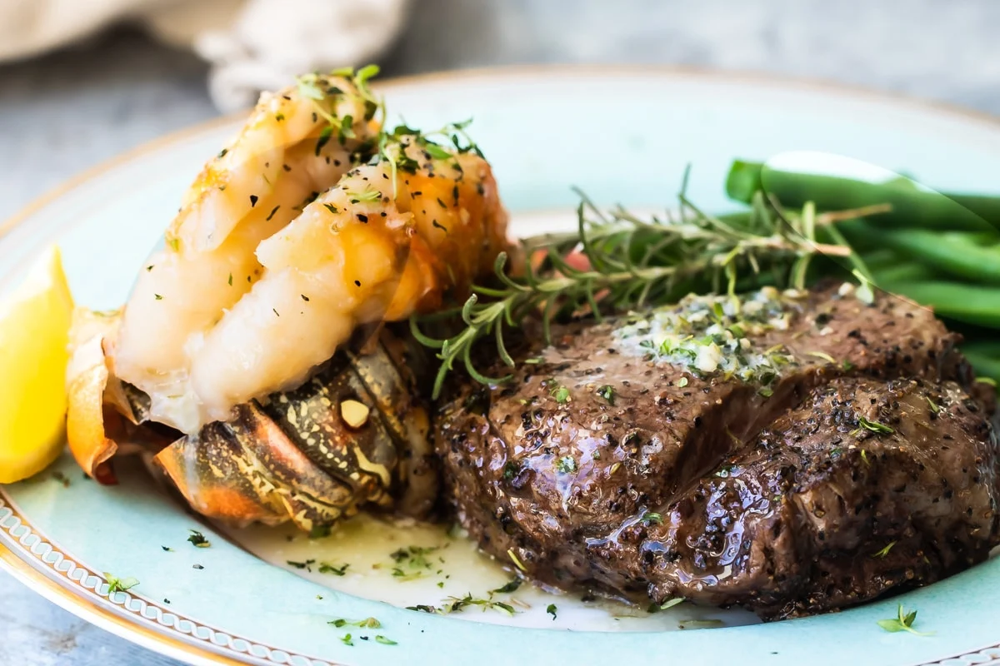

A variety of foods might be included in a surf and turf, but traditionally, it is an entrée that includes both a portion of meat and a portion of seafood. The meat is usually a steak, while the seafood might be anything from lobster to shrimps or prawns. The meat is typically grilled and served with an accompanying thick sauce, while the seafood is usually grilled, fried, baked, or boiled, depending on the choice of seafood.
Meal prep time : 30 minutes
Servings : 4